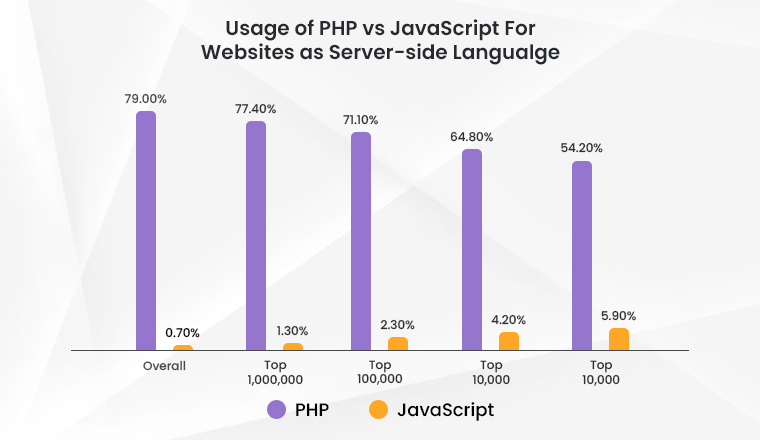
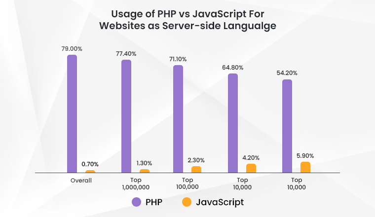

Quest-ce qu'HTML 5 ?
HTML5 aussi appelé Hypertex Markup Language 5 est un langage qu'on appelle "De balisage", mais vous me direz, "Qu'est-ce qu'une balise ?"
Alors on va faire simple, je vais ici vous montrer comment une page HTML basique est structurée.
Vous vous dîtes sûrement, (ou peut-être pas...) : "Pourquoi tant de code pour si peu d'affichage ?"
Ce que vous devez savoir, c'est que chaque balise est intérpretée par notre navigateur comme une boîte, elles sont presque toutes perçues de la même manière à l'interprétation, mais ce n'est pas ça qui nous intéresse, et on va voir ça dans la partie plus bas.
La programmation sémantique
Ce que vous devez savoir, c'est que quand vous décider de publier un site sur le web, les robots de Google iront lire votre code. Mais ces robots n'ont pas d'yeux pour voir comme nous, c'est pour ce fait qu'existe la sémantique.
Comme vous pouvez le voir, HTML fonctionne avec une balise HEAD et une balise BODY. La partie head, aussi traduite en "tête" en français, serait la tête de notre page, celle à qui on donnerait les données pour que le corps puisse bouger.
Passons maintenant à la partie body, aussi traduite en "corps" en français, ce serait donc le corps de notre page et donc ce qui s'affichera sur notre navigateur.
Mais qu'est-ce que la sémantique a à faire là dedans ? Très simple, le schéma est le même. Avec la balise HEADER, on indique aux robots que c'est la tête de notre site et donc le haut.
Et vous me direz aussi "Et où est le body ?", et bien c'est très simple, on utilise la balise MAIN, aussi traduite en "Principal" en français ce qui voudrait donc dire partie principale.
Il y a maintenant une autre balise, qui n'est pas dans le schéma basique d'une page HTML mais très simple à comprendre avec son nom FOOTER aussi traduit par pied en français, ce qui est donc le pied de notre corps et donc le bas de la page.
 
